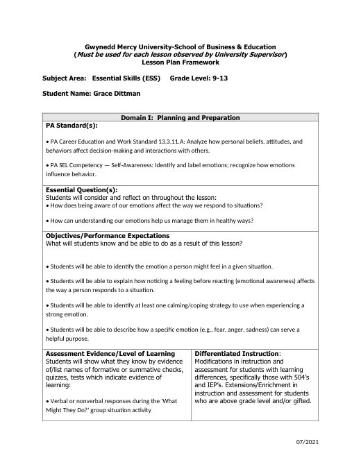
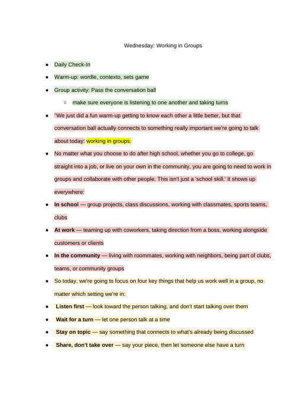
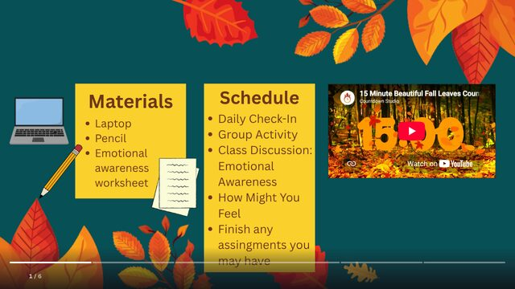

Grace Dittman
Block 2 Math
Block 3 Math
ESS
Lesson Plans
Résumé
Photos
Search
Home
›
ESS
›
weeks 4+5
weeks 4+5
← weeks 1+2+3
weeks 6+7 →
Activities
· 3 files
Emotional Awareness
Emotional Awareness.pdf
Emotions Drive Behaviors
Emotions Drive Behaviors.pdf
How Might You Feel?
How Might You Feel.pdf
Lesson Plans
· 8 files
Mindfulness & Breaking Down Tasks
Breaking Down Tasks 9_28.docx
Emotional Awareness
Emotional Awareness 9_22.docx
Mindfulness & Breaking Down Tasks
ESS9-28LessonPlan.docx
Working in Groups
ESS 9-23 & 9-30LessonPlan.docx

Emotional Awareness
ESS 9_22 & 9_29Lesson Plan.docx
ESSFridayRoutineLessonPlan
ESSFridayRoutineLessonPlan.docx
ESSThursdayLessonPlan
ESSThursdayLessonPlan.docx

Working in Groups
Working in Groups 9_23.docx
Slides
· 1 file

Canva slides ESS week 4_5
Canva slides ESS week 4_5.docx
← weeks 1+2+3
weeks 6+7 →